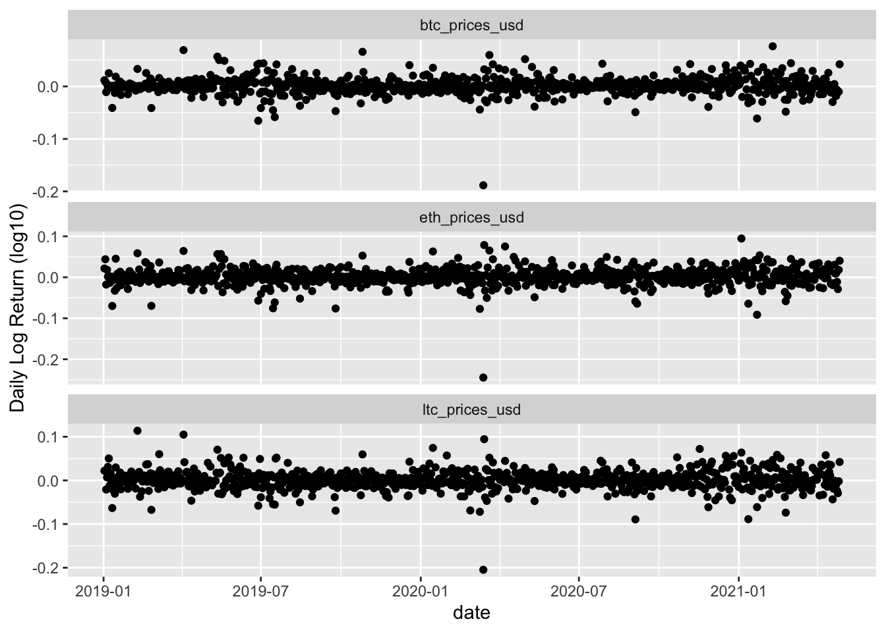
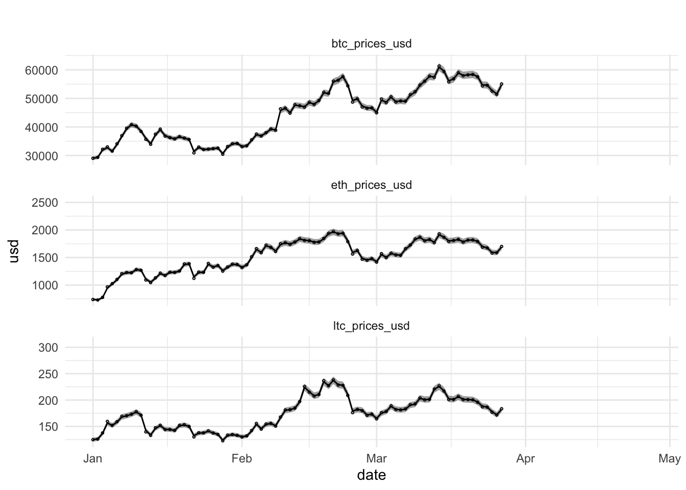
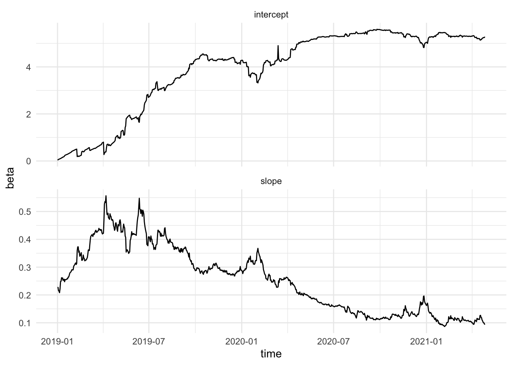

An introduction to state-space models for time-series analysis with examples on three major crypto-currencies
Lieven Clement
April 19, 2021
1 Introduction
Associate Professor of Statistical Genomics in Ghent University
Advocate of open research and open teaching: All our teaching materials, methods, tools and analyses for papers are open source and freely available on github
Method development for differential analysis of gene and protein expression
Background in environmental engineering with a PhD in environmental statistics with a focus on timeseries analysis of river water quality data
Intro to
- State Space Models
- Kalman filter & smoother
- Applied on cryptocurrency data
- Brief intro and illustration only, by no means the current state of the art
- More advanced State Space Models required for hedging or predicting cryptocurrency data in practice.
This work is licensed under the Creative Commons Attribution-NonCommercial-ShareAlike 4.0 International (CC BY-NC-SA 4.0)
1.1 Useful functions and load libraries
Click to see loaded libraries
## ── Attaching packages ─────────────────────────────────────── tidyverse 1.3.1 ──## ✔ ggplot2 3.3.3 ✔ purrr 0.3.4
## ✔ tibble 3.1.1 ✔ dplyr 1.0.5
## ✔ tidyr 1.1.3 ✔ stringr 1.4.0
## ✔ readr 1.4.0 ✔ forcats 0.5.1## ── Conflicts ────────────────────────────────────────── tidyverse_conflicts() ──
## ✖ dplyr::filter() masks stats::filter()
## ✖ dplyr::lag() masks stats::lag()## Registered S3 method overwritten by 'GGally':
## method from
## +.gg ggplot2##
## Attaching package: 'gridExtra'## The following object is masked from 'package:dplyr':
##
## combineClick to see function to retreive coin data from coingecko
# coinSymbol: symbol of cryptocurrency token or coin
# days: past number of days you want to retrieve data for. "max" returns all available data for a token or coin.
# currency: fiat currency you want to use for price ("usd","eur","jpy", ...)
# interval: time interval on which you want to retreive data.
retreiveCoinData <- function(
coinSymbol="btc",
days = "max",
currency = "usd",
interval = "daily")
{
#Retreive coinlist to lookup coin id
coinlist <- httr::GET("https://api.coingecko.com/api/v3/coins/list")$content %>%
rawToChar %>%
jsonlite::fromJSON(.)
coinId <- coinlist %>% filter(symbol == coinSymbol) %>% pull(id)
#retreive coin data via API
coinData <- httr::GET(
paste0(
"https://api.coingecko.com/api/v3/coins/",
coinId,
"/market_chart?vs_currency=",
currency,
"&days=",
days,
"&interval=",
interval)
)$content %>%
rawToChar %>%
jsonlite::fromJSON(.)
#store coin data as tible, include coin symbol in price name and covert unix time string to timestamp object
coinData <- lapply(names(coinData), function(var,coinData)
{
data <- coinData[[var]] %>% as_tibble()
names(data) <- c(
"timestamp",
paste0(coinSymbol,"_",var)
)
data <- data %>%
mutate(
timestamp = as.POSIXct(
timestamp/1000,
origin = "1970-01-01",tz="GMT"
)
)
return(data)
}, coinData = coinData
) %>% reduce(left_join, by = "timestamp")
#rename prices column to include currency
pricesId <- grep(names(coinData), pattern="prices")
names(coinData)[pricesId] <- paste(
names(coinData)[pricesId],
currency,
sep="_")
#get rid of last time because coin gecko returns all daily data at 00:00 GMT and includes the last entry of the current day.
if(days=="max")
return(coinData) else
return (coinData[1:days,])
}Click to see function for acf plots
Function to make ACF and PACF plots copied from https://github.com/mdelhey/mdutils
ggacf <- function(x, type = c("correlation", "covariance", "partial"), ci = 0.95, ...) {
type <- match.arg(type)
x.acf <- acf(x, type = type, plot = FALSE, ...)
x.df <- with(x.acf, data.frame(lag, acf))
x.ci <- qnorm((1 + ci)/2) / sqrt(length(x))
print(x.ci)
ggplot(data = x.df, aes(x = lag, y = acf)) +
geom_hline(aes(yintercept = 0)) +
geom_segment(aes(xend = lag, yend = 0)) +
geom_hline(yintercept = c(x.ci, -x.ci), color = "blue", linetype = "dashed") +
scale_y_continuous(breaks = seq(0.0, 1.0, 0.2))
}1.2 Data exploration
Select coins bitcoin (btc), etherium (eth) and litecoin (ltc)
- We want to retreive data from January First 2019 up to today.
- We have to calculate the number of days for which we want to retreive data for the coingecko API
todaysDate <- as.POSIXlt(Sys.Date(),tz="GMT")
startDate <- as.POSIXlt("2019-01-01",tz="GMT")
ndays <- as.double(todaysDate - startDate) + 1Retreive data from coingecko. We will use the default currency (USD).
coinData <- coinSymbols %>%
map(retreiveCoinData,days=ndays) %>%
reduce(left_join, by = "timestamp") %>%
arrange(timestamp) %>%
mutate(date=as.Date(timestamp))## Warning: The `x` argument of `as_tibble.matrix()` must have unique column names if `.name_repair` is omitted as of tibble 2.0.0.
## Using compatibility `.name_repair`.1.2.1 Time series plots
Click to see code for plot

Click to see code for plot
Click to see code for plot
returnPlot2 <- coinData %>%
select(ends_with("prices_usd")) %>%
apply(.,2,function(x) log10(x) %>% diff) %>%
as_tibble %>%
mutate(date = coinData$date[-1]) %>%
gather(coin, log_return,-date) %>%
ggplot(aes(date,log_return)) +
geom_point() +
ylab("Daily Log Return (log10)") +
facet_wrap(~coin,nrow=3,scales="free_y")
1.2.2 Correlation Structure
1.2.2.1 Correlation between cryptocurrency timeseries
Click to see code for plot
## `stat_bin()` using `bins = 30`. Pick better value with `binwidth`.
## `stat_bin()` using `bins = 30`. Pick better value with `binwidth`.
## `stat_bin()` using `bins = 30`. Pick better value with `binwidth`.There is a strong correlation between the cryptocurrency timeseries!
The correlation between the cryptocurrencies seems to change over time (Dynamic hedge ratio’s?)
1.2.2.2 Autocorrelation (within timeseries)
Autocorrelation: \[\text{cor}[y_t,y_{t-k}]\] with lag \(k=1,2,3,\ldots\)
Click to see code for plot
acfPlots <- paste0(coinSymbols,"_prices_usd") %>%
map(
function(x,coinData)
coinData %>%
pull(x) %>%
log10 %>%
ggacf +
ggtitle(x),
coinData=coinData
)## [1] 0.06762518
## [1] 0.06762518
## [1] 0.06762518- There is a very strong autocorrelation within time series!
- Indeed the price at time t is strongly correlated to that at a few days (lags k) earlier.
Partial correlation?
\[\text{cor}[y_t,y_{t-k}\vert y_{t-1}\ldots y_{t-k+1}]\]
Click to see code for plot
pacfPlots <- paste0(coinSymbols,"_prices_usd") %>%
map(
function(x,coinData)
coinData %>%
pull(x) %>%
log10 %>%
ggacf(type="partial") +
ylab("Partial ACF") +
ggtitle(x),
coinData=coinData
)## [1] 0.06762518
## [1] 0.06762518
## [1] 0.06762518- The partial ACF only shows a direct correlation between the current price and the price at the previous day (lag 1).
- Hence, the price of cryptocurrencies seems uncorrelated with that in the past when we condition on yesterdays price.
\[\ldots \rightarrow y_{t-2} \rightarrow y_{t-1} \rightarrow y_t \rightarrow y_{t+1} \rightarrow \ldots \]
1.2.3 Normality
Click to see code for plot
- The log-differenced data are symmetric but non-normally distributed
- In the remainder we will introduce Gaussian State Space Models
- However, if the timeseries are non-Gaussian the parameter estimators are still assymptotically normally distributed.
- In short time-series we can resort to the bootstrap to provide better inference.
2 State Space Models
2.1 Cryptocurrency example
We will log\(_\text{10}\)-transform the data and model it with a state space model.
Let \(\mathbf{y}_t\) be a vector of the log-transformed prices of btc, eth and ltc at time \(t\) \[\mathbf{y}_t=\begin{bmatrix}y^\text{btc}_t\\y^\text{eth}_t\\y^\text{ltc}_t\end{bmatrix}\]
Suppose that they are driven by an underlying unknown first order Markovian cryptocurrency price level, referred to as the state \(\mathbf{X}\) \[\mathbf{X}=\begin{bmatrix}X^\text{btc}_t\\X^\text{eth}_t\\X^\text{ltc}_t\end{bmatrix}\]
So the actual observed price \(\mathbf{y}_t\) is a noisy realisation of the underlying unknown price level (state) \(\mathbf{X}_t\).
\[ \begin{array}{ccccccccccc}\ldots & \rightarrow & \mathbf{X}_{t-2} & \rightarrow & \mathbf{X}_{t-1} & \rightarrow & \mathbf{X}_t & \rightarrow & \mathbf{X}_{t+1} & \rightarrow & \ldots\\ &&\downarrow&&\downarrow&&\downarrow&&\downarrow\\ \ldots & & \mathbf{y}_{t-2} & & \mathbf{y}_{t-1} & & \mathbf{y}_t & & \mathbf{y}_{t+1} & & \ldots \end{array} \]
- Assume that \(\mathbf{y}_t\vert \mathbf{X}_t\) and \(\mathbf{X}_t\vert \mathbf{X}_{t-1}\) are multivariate normally (MVN) distributed
- We can than formulate the following State Space Model:
\[ \left\lbrace \begin{array}{llll} \mathbf{y}_t&=&\mathbf{X}_t+\mathbf{v}_t &\text{with}\ \mathbf{v}_t\sim MVN(\mathbf{0},\mathbf{R})\\ \mathbf{X}_t&=&\boldsymbol{\Phi} \mathbf{X}_{t-1} + \mathbf{w}_t &\text{with}\ \mathbf{w}_t\sim MVN(\mathbf{0},\mathbf{Q}) \end{array} \right. \]
with
- \(t = 1, \ldots,n\)
- an \(3 \times 3\) transition matrix \(\boldsymbol{\Phi}\) and
- independent \(3 \times 1\) vectors \(\mathbf{v}_t\) and \(\mathbf{w}_t\) with mean zero and variance-covariance matrix \(\mathbf{R}\) and \(\mathbf{Q}\), respectively.
2.2 General formulation of State Space Model
\[ \left\lbrace \begin{array}{llll} \mathbf{y}_t&=&\mathbf{A}_t\mathbf{X}_t+\mathbf{v}_t &with\ \mathbf{v}_t\sim MVN(\mathbf{0},\mathbf{R}_t)\\ \mathbf{X}_t&=&\boldsymbol{\Phi}_t \mathbf{X}_{t-1} + \mathbf{w}_t &with\ \mathbf{w}_t\sim MVN(\mathbf{0},\mathbf{Q}_t) \end{array} \right.\]
with
- \(t=1,\ldots, n\)
- first order Markovian state process \(\mathbf{X}_t=(X_{1t}...X_{mt})^T\),
- \(\mathbf{y}_t=(y_{1t}...y_{pt})^T\)
- \(\mathbf{v}_t \perp \!\!\! \perp \mathbf{w}_t\)
- \(\mathbf{A}_t\) the \(p \times m\) measurement or observation matrix that links \(\mathbf{y}_t\) to \(\mathbf{X}_t\)
- an \(m \times m\) transition matrix \(\boldsymbol{\Phi}_t\) and
Note, that the State Space Model is very flexible!
By embedding the AR(1) structure in the measurement equation, the time series model becomes much more general.
When \(\mathbf{v}_t\) and \(\mathbf{w}_t\) are allowed to be correlated, it can be shown that for specific choices the state-space model can also model specific ARMA models.
Extensions are very flexible: e.g.
- missing data,
- exogeneous covariates,
- more complex autocorrelation structures
- …
2.3 Prediction, Filtering & Smoothing
From a practical view, a primary aim of the state-space analysis is to produce estimates of the states \(\mathbf{X}_t\) by using a set of observations \(\mathbf{Y}_r=(\mathbf{y}_1,\ldots, \mathbf{y}_r)^T\).
Indeed we want to infer on the underlying latent price level!
The estimation of \(\mathbf{X}_t\) given \(\mathbf{Y}_r\) is referred to as
- prediction for \(t>r\),
- filtering for \(t=r\), and
- smoothing for \(t<r\)
2.4 Kalman Filter and Smoother
2.4.1 Cryptocurrency example
\[ \begin{array}{ccccccccccc}\ldots & \rightarrow & \mathbf{X}_{t-2} & \rightarrow & \mathbf{X}_{t-1} & \rightarrow & \mathbf{X}_t & \rightarrow & \mathbf{X}_{t+1} & \rightarrow & \ldots\\ &&\downarrow&&\downarrow&&\downarrow&&\downarrow\\ \ldots & & \mathbf{y}_{t-2} & & \mathbf{y}_{t-1} & & \mathbf{y}_t & & \mathbf{y}_{t+1} & & \ldots\\\\ \end{array} \]
\[ \left\lbrace \begin{array}{llll} \mathbf{y}_t&=&\mathbf{X}_t+\mathbf{v}_t &\text{with}\ \mathbf{v}_t\sim MVN(\mathbf{0},\mathbf{R})\\ \mathbf{X}_t&=&\boldsymbol{\Phi} \mathbf{X}_{t-1} + \mathbf{w}_t &\text{with}\ \mathbf{w}_t\sim MVN(\mathbf{0},\mathbf{Q}) \end{array} \right. \]
So in our example \(\mathbf{A}_t=\mathbf{I}\)
2.4.1.1 Kalman Filter
Important for e.g. online estimation and prediction
Let \(\mathbf{Y}_r=(\mathbf{y}_1^T,\ldots,\mathbf{y}_r^T)^T\)
Prediction step: \[\text{E}\left[\mathbf{X}_t\vert \mathbf{Y}_{t-1}\right]\]
Update step when new observation comes in: \[\text{E}\left[\mathbf{X}_t\vert \mathbf{Y}_{t}\right]\]
Provides efficient factorisation of the likelihood
y <- coinData %>%
select(ends_with("_prices_usd")) %>%
log10 %>%
as.matrix
num <- nrow(y)
# Measurement matrix A = I
A=diag(3) # creates 3x3 diagonal matrix
# initial values
mu0 <- matrix(0,3,1)
Sigma0 <- diag(c(.1,.1,.1),3)
Phi <- diag(1,3)
cQ <- diag(c(.1,.1,.1),3)
cR <- diag(c(.1,.1,.1),3)
em <- EM0(num = num, y = y, A = A, mu0 = mu0, Sigma0 = Sigma0, Phi = Phi, cQ = cQ, cR = cR, max.iter = 100, tol = .00001)
kf <- Kfilter0(num = num, y = y, A = A, mu0 = mu0, Sigma0 = em$Sigma0, Phi = em$Phi, cQ = chol(em$Q), cR = chol(em$R))Click to see code to make plots
dataHlp <- coinData %>%
select(date,ends_with("prices_usd")) %>%
gather(coin, usd, -date) %>%
mutate(xf = kf$xf[,1,] %>% t(.) %>% c) %>%
mutate(xfll = (kf$xf[,1,] -
2 * sapply(1:ndays,function(i) kf$Pf[,,i] %>% diag %>% sqrt)) %>% t(.) %>% c) %>%
mutate(xful = (kf$xf[,1,] +
2 * sapply(1:ndays,function(i) kf$Pf[,,i] %>% diag %>% sqrt)) %>% t(.) %>% c) %>%
mutate(xp = kf$xp[,1,] %>% t(.) %>% c) %>%
mutate(xpll = (kf$xp[,1,] -
2 * sapply(1:ndays,function(i) kf$Pp[,,i] %>% diag %>% sqrt)) %>% t(.) %>% c) %>%
mutate(xpul = (kf$xp[,1,] +
2 * sapply(1:ndays,function(i) kf$Pp[,,i] %>% diag %>% sqrt)) %>% t(.) %>% c) tplot <- as.Date("2020-12-31")
basePlot <- dataHlp %>%
filter(date > tplot) %>%
ggplot(aes(date,usd)) +
geom_point(alpha=0) +
facet_wrap(~coin,nrow=3,scales="free_y") +
theme_minimal()
stopDate <- dataHlp %>% pull(date) %>% max
startDate <- stopDate - 30
dataHlp2 <- dataHlp %>%
filter(date > tplot & date < startDate)
i <- 1
plotKFilterList <- list(
basePlot +
geom_point(shape=21,size=.5, data = dataHlp2) +
geom_ribbon(aes(ymin = 10^xful,ymax = 10^xfll), alpha = 0.45, data = dataHlp2) +
geom_line(aes(date,10^xf), data = dataHlp2) +
ggtitle(" ")
)
for (t in seq(startDate,stopDate,1))
{
dataHlp2 <- dataHlp %>%
filter(date > tplot & date < t)
i <- i+1
plotKFilterList[[i]] <- basePlot +
geom_point(shape=21,size=.5, data = dataHlp2) +
geom_ribbon(aes(ymin = 10^xful,ymax = 10^xfll), alpha = 0.45, data = dataHlp2) +
geom_line(aes(date,10^xf), data = dataHlp2) +
geom_point(aes(date,10^xp),data = dataHlp %>% filter(date == t),color=2) +
geom_segment(aes(x = date, y = 10^xpll, xend = date, yend = 10^xpul), color = 2, data = dataHlp %>% filter(date == t)) +
ggtitle("Prediction")
i <- i+1
plotKFilterList[[i]] <- plotKFilterList[[i-1]] +
geom_point(aes(date,usd),data = dataHlp %>% filter(date == t)) +
ggtitle("New observation arrives")
i <- i + 1
dataHlp2 <- dataHlp %>%
filter(date > tplot & date <= t)
plotKFilterList[[i]] <- basePlot +
geom_point(shape=21,size=.5, data = dataHlp2) +
geom_ribbon(aes(ymin = 10^xful,ymax = 10^xfll), alpha = 0.45, data = dataHlp2) +
geom_line(aes(date,10^xf), data = dataHlp2) +
geom_point(aes(date,10^xp),data = dataHlp %>% filter(date == t),color=2) +
geom_segment(aes(x = date, y = 10^xpll, xend = date, yend = 10^xpul), color = 2, data = dataHlp %>% filter(date == t)) +
geom_point(aes(date,usd),data = dataHlp %>% filter(date == t)) +
ggtitle("Update Filter")
}
2.4.1.2 Kalman Smoother
- Offline applications: Use all available information \(\mathbf{Y}_N=(\mathbf{y}_1^T,\ldots,\mathbf{y}_n^T)^T\).
- Smoothed estimator also based on measurements on later time instants \(t+1,\ldots,n\): \(\text{E}\left[\mathbf{X}_t\vert \mathbf{Y}_N\right]\)
ks <- Ksmooth0(num = num, y = y, A = A, mu0 = mu0, Sigma0 = em$Sigma0, Phi = em$Phi, cQ = chol(em$Q), cR = chol(em$R))Click to see code for plot
tplot <- as.Date("2020-12-31")
basePlot <- dataHlp %>%
filter(date > tplot) %>%
ggplot(aes(date,usd)) +
geom_point(alpha=0) +
facet_wrap(~coin,nrow=3,scales="free_y") +
theme_minimal()
dataHlp2 <- dataHlp %>%
mutate(xs = ks$xs[,1,] %>% t(.) %>% c) %>%
mutate(xsll = (ks$xs[,1,] -
2 * sapply(1:ndays,function(i) ks$Ps[,,i] %>% diag %>% sqrt)) %>% t(.) %>% c) %>%
mutate(xsul = (ks$xs[,1,] +
2 * sapply(1:ndays,function(i) ks$Pf[,,i] %>% diag %>% sqrt)) %>% t(.) %>% c)
plotKFilterPrediction <- basePlot +
geom_point(shape=21,size=.5, data = dataHlp2 %>% filter(date > tplot)) +
geom_ribbon(aes(ymin = 10^xpul,ymax = 10^xpll), alpha = 0.45, data = dataHlp2 %>% filter(date > tplot)) +
geom_line(aes(date,10^xp), data = dataHlp2 %>% filter(date > tplot)) +
ggtitle("Kalman one-step-ahead prediction")
plotKFilter <- basePlot +
geom_point(shape=21,size=.5, data = dataHlp2 %>% filter(date > tplot)) +
geom_ribbon(aes(ymin = 10^xful,ymax = 10^xfll), alpha = 0.45, data = dataHlp2 %>% filter(date > tplot)) +
geom_line(aes(date,10^xf), data = dataHlp2 %>% filter(date > tplot)) +
ggtitle("Kalman filter")
plotKSmoother <- basePlot +
geom_point(shape=21,size=.5, data = dataHlp2 %>% filter(date > tplot)) +
geom_ribbon(aes(ymin = 10^xsul,ymax = 10^xsll), alpha = 0.45, data = dataHlp2 %>% filter(date > tplot)) +
geom_line(aes(date,10^xs), data = dataHlp2 %>% filter(date > tplot)) +
ggtitle("Kalman smoother") 2.4.2 Under the hood of the Kalman Filter
General formulation of the State Space Model
\[ \left\lbrace \begin{array}{llll} \mathbf{y}_t&=&\mathbf{A}_t\mathbf{X}_t+\mathbf{v}_t &with\ \mathbf{v}_t\sim MVN(\mathbf{0},\mathbf{R}_t)\\ \mathbf{X}_t&=&\boldsymbol{\Phi}_t \mathbf{X}_{t-1} + \mathbf{w}_t &with\ \mathbf{w}_t\sim MVN(\mathbf{0},\mathbf{Q}_t) \end{array} \right.\]
Assume that following are known
- \(\mathbf{Y}_{t-1}=(\mathbf{y}_1^T,\ldots,\mathbf{y}_{t-1}^T)^T\)
- \(\mathbf{X}_{t-1\vert t-1}=\text{E}\left[\mathbf{X}_{t-1}\vert \mathbf{Y}_{t-1}\right]\)
- \(\mathbf{P}_{t-1\vert t-1}=\text{Var}\left[\mathbf{X}_{t-1}\vert \mathbf{Y}_{t-1}\right]\)
2.4.2.1 Prediction Step
\[ \left\lbrace \begin{array}{llll} \mathbf{y}_t&=&\mathbf{A}_t\mathbf{X}_t+\mathbf{v}_t &with\ \mathbf{v}_t\sim MVN(\mathbf{0},\mathbf{R}_t)\\ \mathbf{X}_t&=&\boldsymbol{\Phi}_t \mathbf{X}_{t-1} + \mathbf{w}_t &with\ \mathbf{w}_t\sim MVN(\mathbf{0},\mathbf{Q}_t) \end{array} \right.\]
\[ \begin{array}{rcl} \mathbf{X}_t\vert\mathbf{Y}_{t-1}&\sim& MVN(\mathbf{X}_{t\vert t-1}, \mathbf{P}_{t\vert t-1})\\\\ \mathbf{X}_{t\vert t-1}&=&\text{E}\left[\mathbf{X}_t\vert\mathbf{Y}_{t-1}\right]\\&=&\boldsymbol{\Phi}_t\text{E}\left[\mathbf{X}_{t-1}\vert\mathbf{Y}_{t-1}\right]\\ &=&\boldsymbol{\Phi}_t \mathbf{X}_{t-1\vert t-1}\\\\ \mathbf{P}_{t\vert t-1}&=&\text{Var}\left[\mathbf{X}_t\vert\mathbf{Y}_{t-1}\right] \\&=& \boldsymbol{\Phi}_t \text{Var}\left[\mathbf{X}_{t-1}\vert\mathbf{Y}_{t-1}\right] \boldsymbol{\Phi}_t^T+\text{Var}\left[\mathbf{w}_t\vert \mathbf{Y}_{t-1}\right]\\ &=&\boldsymbol{\Phi}_t \mathbf{P}_{t-1\vert t-1} \boldsymbol{\Phi}_t^T+\mathbf{Q}_t. \end{array} \]
One step ahead prediction: \[\text{E}\left[\mathbf{y}_{t}\vert \mathbf{Y}_{t-1}\right]=\mathbf{A}_t\mathbf{X}_{t\vert t-1}\]
2.4.2.2 Update Step
\[ \left\lbrace \begin{array}{llll} \mathbf{y}_t&=&\mathbf{A}_t\mathbf{X}_t+\mathbf{v}_t &with\ \mathbf{v}_t\sim MVN(\mathbf{0},\mathbf{R}_t)\\ \mathbf{X}_t&=&\boldsymbol{\Phi}_t \mathbf{X}_{t-1} + \mathbf{w}_t &with\ \mathbf{w}_t\sim MVN(\mathbf{0},\mathbf{Q}_t) \end{array} \right.\]
If observation \(\mathbf{y}_t\) at time \(t\) becomes available
\[ \begin{array}{rcl} \mathbf{X}_t\vert\mathbf{Y}_{t-1}&\sim& MVN(\mathbf{X}_{t\vert t}, \mathbf{P}_{t\vert t})\\\\ \mathbf{X}_{t\vert t}&=&\text{E}\left[\mathbf{X}_t\vert \mathbf{Y}_{t}\right]\\ &=&\text{E}\left[\mathbf{X}_t\vert \mathbf{Y}_{t-1}, \boldsymbol{y}_t\right]\\\\ \mathbf{P}_{t\vert t} &=& \text{Var}\left[\mathbf{X}_t\vert\mathbf{Y}_t\right]\\ &=&\text{Var}\left[\mathbf{X}_t\vert\mathbf{Y}_{t-1},\mathbf{y}_t\right] \end{array} \]
Exploit that \(\mathbf{X}_t\) and \(\mathbf{y}_t\) given \(\mathbf{Y}_{t-1}\) are multivariate normally distributed! \[\left.\begin{bmatrix} \mathbf{X}_t\\ \mathbf{y}_t \end{bmatrix} \right\vert \mathbf{Y}_{t-1} \sim MVN\left(\begin{bmatrix} \mathbf{X}_{t\vert t-1}\\ \mathbf{A}_{t}\mathbf{X}_{t\vert t-1} \end{bmatrix}, \begin{bmatrix} \mathbf{P}_{t\vert t-1}&\mathbf{P}_{t\vert t-1}\mathbf{A}_{t}^T\\ \mathbf{A}_{t} \mathbf{P}_{t\vert t-1}&\boldsymbol{\Sigma}_t \end{bmatrix}\right) \]
With
\[\begin{array}{lcl} \boldsymbol{\Sigma}_t=\text{Var}\left[\mathbf{y}_t\vert \mathbf{Y}_{t-1}\right]&=&\text{Var}\left[\mathbf{A}_t\mathbf{X}_t+\mathbf{v}_t\vert\mathbf{Y}_{t-1}\right]\\&=&\mathbf{A}_t\text{Var}\left[\mathbf{X}_t\vert \mathbf{Y}_{t-1}\right]\mathbf{A}_t^T+\text{Var}\left[\mathbf{v}_t\right]\\ &=&\mathbf{A}_t \mathbf{P}_{t\vert t-1} \mathbf{A}_t^T + \mathbf{R}_t \end{array}\]
It can be shown that \(\mathbf{X}_t\vert \mathbf{Y}_t\) is the Best Linear Unbiased Predictor BLUP by exploiting the conditional expectation for jointly multivariate normal data (See wikipedia ).
\[ \begin{array}{rcl} \text{E}\left[\mathbf{X}_t\vert\mathbf{Y}_{t-1},\mathbf{y}_t\right] &=&\text{E}\left[\mathbf{X}_t\vert \mathbf{Y}_{t-1}\right]+\text{Cov}\left[\mathbf{X}_t,\mathbf{y}_t\vert\mathbf{Y}_{t-1}\right]\text{Var}\left[\mathbf{y}_t\vert\mathbf{Y}_{t-1}\right]^{-1}\left(\mathbf{y}_t-\mathbf{A}_t\mathbf{X}_{t\vert t-1 }\right),\\ \mathbf{X}_{t\vert t}&=&\mathbf{X}_{t\vert t-1}+\mathbf{P}_{t\vert t-1} \mathbf{A}_t^T\boldsymbol{\Sigma}_t^{-1}\left(\mathbf{y}_t-\mathbf{A}_t\mathbf{X}_{t\vert t-1 }\right), \end{array} \]
and
\[ \begin{array}{rcl} \text{Var}\left[\mathbf{X}_t\vert\mathbf{Y}_{t-1},\mathbf{y}_t\right]&=&\text{Var}\left[\mathbf{X}_t\vert\mathbf{Y}_{t-1}\right]-\text{Cov}\left[\mathbf{X}_t,\mathbf{y}_t\vert\mathbf{Y}_{t-1}\right]\text{Var}\left[\mathbf{y}_t\vert\mathbf{Y}_{t-1}\right]^{-1}\text{Cov}\left[\mathbf{X}_t,\mathbf{y}_t\vert\mathbf{Y}_{t-1}\right]^T\\ \mathbf{P}_{t\vert t}&=&\mathbf{P}_{t\vert t-1}-\mathbf{P}_{t\vert t-1} \mathbf{A}_t^T \boldsymbol{\Sigma}_t^{-1} \mathbf{A}_t \mathbf{P}_{t\vert t-1}, \end{array} \]
Note, that prediction error / innovation: \[\boldsymbol{\epsilon}_t =\mathbf{y}_t-\mathbf{A}_t\mathbf{X}_{t\vert t-1}\]
- \(\boldsymbol{\epsilon}_t\ \perp \!\!\! \perp \ \mathbf{y}_r\) for all \(r=1,\ldots,t-1\)
- \[\boldsymbol{\epsilon}_t \sim \text{MVN}\left(\mathbf{0},\boldsymbol{\Sigma }_t\right)\]
- innovations are key to use Kalman Filter for decomposition of the likelihood.
2.4.2.3 Summary Kalman Filter
If \(\mathbf{X}_{0\vert 0}\) and \(\mathbf{P}_{0\vert 0}\) are known, then the Kalman filter becomes:
for \(t=1,\ldots, n\)
- Prediction step [\begin{array}{rcl} _{tt-1}&=&t {t-1t-1} \\
_{tt-1}&=&t {t-1t-1} _t^T + _t. \end{array} ]
- Update step \[ \begin{array}{rcl} \mathbf{X}_{t\vert t}&=&\mathbf{X}_{t\vert t-1}+ \mathbf{P}_{t\vert t-1} \mathbf{A}_t^T \boldsymbol{\Sigma}_t^{-1} (\mathbf{y}_t - \mathbf{A}_t \mathbf{X}_{t\vert t-1} )\\\\ \mathbf{P}_{t\vert t}&=&\mathbf{P}_{t\vert t-1}-\mathbf{P}_{t\vert t-1} \mathbf{A}_t^T \boldsymbol{\Sigma}_t^{-1} \mathbf{A}_t \mathbf{P}_{t\vert t-1}\\\\ \boldsymbol{\Sigma}_t&=&\mathbf{A}_t \mathbf{P}_{t\vert t-1} \mathbf{A}_t^T + \mathbf{R}_t. \end{array} \]
2.4.3 Under the hood of the Kalman Smoother
\(\text{E}\left[\mathbf{X}_t\vert \mathbf{Y}_N\right]\)
Start with the final quantities, \(\mathbf{X}_{n\vert n}\) and \(\mathbf{P}_{n\vert n}\) and proceeds backwards.
For \(t=n-1, \ldots, 0\), it consists of the following backward recursions
\[\begin{align} &\mathbf{X}_{t\vert n}=\mathbf{X}_{t\vert t}+\mathbf{J}_t(\mathbf{X}_{t+1\vert n}-\mathbf{X}_{t+1\vert t}) \label{SS_B1} \\ &\mathbf{P}_{t\vert n}=\mathbf{P}_{t\vert t}+\mathbf{J}_{t}(\mathbf{P}_{t+1\vert n}-\mathbf{P}_{t+1\vert t})\mathbf{J}_t^{T} \label{SS_B2}\\ &\mathbf{J}_t=\mathbf{P}_{t\vert t}\Phi_{t+1}^T\mathbf{P}_{t+1\vert t}^{-1}. \label{SS_B3} \end{align}\]

2.5 Parameter Estimation
2.5.1 Likelihood and the prediction error decomposition
Classical iid setting, \[\begin{equation*} \log L_{\mathbf{Y_N}}(\boldsymbol{\Psi})=\sum\limits_{t=1}^n \log p(\mathbf{y_t}), \end{equation*}\] Not possible for dependent observations. State-space model allows factorisation using conditional density functions \[\begin{equation*} \log L_{\mathbf{Y}_N}(\boldsymbol{\Psi})=\sum\limits_{t=1}^n\log p(\mathbf{y}_t\vert \mathbf{Y}_{t-1}) \end{equation*}\] \[\mathbf{y}_t\vert\mathbf{Y}_{t-1}\sim MVN(\mathbf{A}_t \mathbf{X}_{t\vert t-1},\boldsymbol{\Sigma}_t)\] \[\begin{equation*} \log L_{\mathbf{Y}_N}(\boldsymbol{\Psi})=-\frac{pn}{2}\log 2 \pi - \frac{1}{2} \sum\limits_{t=1}^n \log \vert \boldsymbol{\Sigma}_t\vert -\frac{1}{2} \sum\limits_{t=1}^n \boldsymbol{\epsilon}_t^T \boldsymbol{\Sigma}_t^{-1} \boldsymbol{\epsilon}_t, \end{equation*}\]
Which can be efficiently calculated by the Kalman filter and can thus be used to estimate the model parameters.
2.5.2 Maximum Likelihood
- Numerical optimisation of likelihood (often troublesome):
- Choose initial values for the parameters
- Run Kalman Filter and calculate likelihood
- Run one iteration of Newton-Raphson with the -2 log likelihood as criterion
- Repeat steps 2-3 with the current Newton-Raphson parameter estimates until convergence.
- For time invariant system: EM algorithm (often slow)
2.5.3 EM algorithm
2.5.3.1 Complete likelihood of \(\mathbf{X}\) and \(\mathbf{Y}\)
\[\begin{multline*} \log L_{\mathbf{Y},\mathbf{X}}(\boldsymbol{\Psi}) \sim -\frac{1}{2} \log|\boldsymbol{\Sigma}_{0}| -\frac{1}{2} (\mathbf{X}_0-\boldsymbol{\mu}_0)^T \boldsymbol{\Sigma}_{0}^{-1} (\mathbf{X}_0-\boldsymbol{\mu}_0)\\ -\frac{n}{2} \log |\mathbf{Q}|-\frac{1}{2}\sum_{t=1}^n (\mathbf{X}_t-\boldsymbol{\Phi X}_{t-1})^T \mathbf{Q}^{-1}(\mathbf{X}_t-\boldsymbol{\Phi X}_{t-1})\\ -\frac{n}{2} \log|\mathbf{R}| -\frac{1}{2} \sum_{t=1}^n (\mathbf{Y}_t-\mathbf{A}_t\mathbf{X}_t)^T\mathbf{R}^{-1}(\mathbf{Y}_t-\mathbf{A}_t\mathbf{X}_t), \end{multline*}\]
- Cannot be calculated: state is unobservable
2.5.3.2 EM algorithm
E-step: \(Q(\boldsymbol{\Psi}, \boldsymbol{\Psi}^k) = \text{E}\left[-2\log L_{\mathbf{Y},\mathbf{X}}(\boldsymbol{\Psi}) \vert \mathbf{Y}_N, \boldsymbol{\Psi}^k\right]\)
M-step: Minimise \(Q(\boldsymbol{\Psi}, \boldsymbol{\Psi}^k)\) to obtain the update of the parameter set \(\boldsymbol{\Psi}^{k+1}\).
Repeate 1-2 until convergence
Before we derive the algorithm we first introduce the lag one covariance estimators
\[\mathbf{P}_{t,t-1\vert r}=\text{cov}\left[\mathbf{X}_t,\mathbf{X}_{t-1}\vert \mathbf{Y}_r\right]\].
Filtered values \[\begin{equation} \mathbf{P}_{t,t-1\vert t}=(\mathbf{I}-\mathbf{P}_{t\vert t-1}\mathbf{A}_t^T\boldsymbol{\Sigma}_t^{-1}\mathbf{A}_t)\boldsymbol{\Phi}_t\mathbf{P}_{t-1\vert t-1}, \label{SS_F6} \end{equation}\]
smoothed values \[\begin{equation} \mathbf{P}_{t,t-1\vert n}=\mathbf{P}_{t,t-1\vert t}+(\mathbf{P}_{t\vert n}-\mathbf{P}_{t\vert t})\mathbf{P}_{t\vert t}^{-1}\mathbf{P}_{t,t-1\vert t}. \label{SS_B4} \end{equation}\]
2.5.3.3 EM-algorithm: E-step
\[\begin{multline*} Q(\boldsymbol{\Psi}, \boldsymbol{\Psi}^k) \sim \text{E}\left[ \log|\boldsymbol{\Sigma}_{0}| + (\mathbf{X}_0-\boldsymbol{\mu}_{0})^T \boldsymbol{\Sigma}_{0}^{-1} (\mathbf{X}_0-\boldsymbol{\mu}_{0})\vert \mathbf{Y}_N, \boldsymbol{\Psi}^k\right]\\\\ +\text{E}\left[n \log |\mathbf{Q}|+\sum_{t=1}^n (\mathbf{X}_t-\boldsymbol{\Phi X}_{t-1})^T \mathbf{Q}^{-1}(\mathbf{X}_t-\boldsymbol{\Phi X}_{t-1})\vert \mathbf{Y}_N, \boldsymbol{\Psi}^k\right]\\\\ +\text{E}\left[n \log|\mathbf{R}| + \sum_{t=1}^n (\mathbf{Y}_t-\mathbf{A}_t\mathbf{X}_t)^T\mathbf{R}^{-1}(\mathbf{Y}_t-\mathbf{A}_t\mathbf{X}_t)\vert \mathbf{Y}_N, \boldsymbol{\Psi}^k\right] \end{multline*}\]
\[ \quad \]
\[\begin{multline*} Q(\boldsymbol{\Psi}, \boldsymbol{\Psi}^k)\sim \log|\boldsymbol{\Sigma}_{0}| + \text{tr}\left[ \boldsymbol{\Sigma}_{0}^{-1} \left \lbrace \mathbf{P}_{0\vert n} + (\mathbf{X}_{0\vert n}- \boldsymbol{\mu}_{0})(\mathbf{X}_{0\vert n}- \boldsymbol{\mu}_{0})^T\right\rbrace\right]\\\\ +n \log |\mathbf{Q}| + \text{tr}\left[ \mathbf{Q^{-1}}\left\lbrace\mathbf{S}_{11} - \mathbf{S}_{10}\boldsymbol{\Phi}^T-\boldsymbol{\Phi} \mathbf{S}_{10}^T+\boldsymbol{\Phi} \mathbf{S}_{00} \boldsymbol{\Phi}^T\right\rbrace\right]\\\\+n\log |\mathbf{R}| + \text{tr}\left[\mathbf{R^{-1}}\sum\limits_{t=1}^n \left\lbrace(\mathbf{y}_t-\mathbf{A}_t \mathbf{X}_{t\vert n})(\mathbf{y}_t-\mathbf{A}_t\mathbf{X}_{t\vert n})^T+\mathbf{A}_t\mathbf{P}_{t\vert n} \mathbf{A}_t^T\right\rbrace\right], \end{multline*}\]
with \[\begin{align*} \mathbf{S}_{11}&=\sum\limits_{t=1}^n (\mathbf{X}_{t\vert n} \mathbf{X}_{t\vert n}^T + \mathbf{P}_{t\vert n})\\ \mathbf{S}_{10}&=\sum\limits_{t=1}^n (\mathbf{X}_{t\vert n}\mathbf{X}_{t-1\vert n}^T + \mathbf{P}_{t,t-1\vert n})\\ \mathbf{S}_{00}&=\sum\limits_{t=1}^n (\mathbf{X}_{t-1\vert n} \mathbf{X}_{t-1\vert n}^T + \mathbf{P}_{t-1\vert n})\\ \end{align*}\]
2.5.3.4 EM algorithm: M-step minimise \(Q(\boldsymbol{\Psi}, \boldsymbol{\Psi}^k)\)
\[\begin{align*} \boldsymbol{\Phi}^{k+1}=&\mathbf{S}_{10}\mathbf{S}_{00}^{-1}\\\\ \mathbf{Q}^{k+1}=& n^{-1}(\mathbf{S}_{11}-\mathbf{S}_{10}\mathbf{S}_{00}^{-1}\mathbf{S}_{10}^T),\\\\ \mathbf{R}^{k+1}=&n^{-1}\sum\limits_{t=1}^n \left[(\mathbf{y}_t-\mathbf{A}_t \mathbf{X}_{t\vert n})(\mathbf{y}_t-\mathbf{A}_t\mathbf{X}_{t\vert n})^T+\mathbf{A}_t\mathbf{P}_{t\vert n} \mathbf{A}_t^T\right]\\\\ \boldsymbol{\mu}_0^{k+1}=& \mathbf{X}_{0\vert n}\\\\ \boldsymbol{\Sigma}_0^{k+1}=&\mathbf{P}_{0\vert n} \end{align*}\]
3 Extensions
- Link between State Space models and cubic smoothing splines
- More complex temporal structures
- Time varying coefficient model
- Missing data
- Kalman filter for Generalized Least Squares (GLS)
- Advanced topics
3.1 Link with Cubic Smoothing Splines
Basic idea of smoothing splines:
\[y_t = \mu_t + v_t\]
with \(t = 1,...,n,\) and \(\mu_t\) a smooth function of t, and \(v_t\) is \(N(0,\sigma^2_v)\).
In cubic smoothing \(\mu_t\) is estimated by minimizing
\[ \sum\limits_{t=1}^n [y_t - \mu_t]^2 + \lambda \int\limits_{t=1}^n \left(\frac{d^2\mu_t}{dt^2}\right)^2 dt \]
with respect to \(\mu_t\) , where \(\lambda > 0\) is a smoothing parameter.
\(\lambda\) controls the degree of smoothness, with larger values yielding smoother estimates.
If \(\lambda = 0\), then minimizer is the data itself \(\hat \mu_t = y_t\), not smooth!
If \(\lambda =\infty\) will force the second derivative to be, resulting in a linear regression : \(\mu_t = \beta_0+\beta t\)
When knots are placed at the time points \(t\), it can be shown that the loss function reduces to
\[ \sum\limits_{t=1}^n [y_t - \mu_t]^2 + \lambda \sum\limits_{t=1}^n \left(\bigtriangledown^2 \mu_t\right)^2 \]
with \(\bigtriangledown^2 \mu_t = \mu_t - 2 \mu_{t-1} + \mu_{t-2}\) finite differences.
3.1.1 Recasting in a state space model
\[ \bigtriangledown^2 \mu_t = w_t \\ \]
and rewriting it
\[ \mu_t = 2 \mu_{t-1} - \mu_{t-2} + w_t \]
enable us to recast the spline in a state space model:
\[\begin{eqnarray*} \begin{bmatrix} \mu_t\\ \mu_{t-1} \end{bmatrix} &=& \begin{bmatrix} 2 & - 1\\ 1 & 0\end{bmatrix} \begin{bmatrix} \mu_{t-1} \\ \mu_{t-2} \end{bmatrix} + \begin{bmatrix}1\\0\end{bmatrix} w_t\\ y_t &=& \begin{bmatrix} 1&0\end{bmatrix}\begin{bmatrix} \mu_{t-1} \\ \mu_{t-2} \end{bmatrix} + v_t \end{eqnarray*}\]
3.1.2 Maximize complete data likelihood to the States:
\[ \log L_{\mathbf{Y},\mathbf{X}}(\boldsymbol{\Psi}) \propto \sigma_v^{-2} \sum\limits_{t=1}^n \left(y_t - \mu_t\right)^2 + \sigma_w^{-2} \sum\limits_{t=1}^n \left(\bigtriangledown^2 \mu_t\right)^2 \]
is equivalent to maximizing:
\[ \log L_{\mathbf{Y},\mathbf{X}}(\boldsymbol{\Psi}) \propto \sum\limits_{t=1}^n \left(y_t - \mu_t\right)^2 + \frac{\sigma_v^{2}}{\sigma_w^{2}} \sum\limits_{t=1}^n \left(\bigtriangledown^2 \mu_t\right)^2 \]
So the State Space model has the same solution as a smoothing spline with penalty \(\lambda = \frac{\sigma_v^{2}}{\sigma_w^{2}}\)!
Mean \(\leftrightarrow\) Variance
Link mixed models and ridge regression/penalisation
3.1.3 Example
- We simulate the signal, or state process, \(\mu_t\) and observations \(y_t\) with \(n = 50\), \(\sigma^2_\omega = .1\) and \(\sigma^2_\epsilon\) = 1.
Click to see code for plot
3.1.3.1 State space model
3.1.3.2 Estimation
Explain maximum likelihood implementation.
## Fitting
Phi <- matrix(c(2,1,-1,0),2)
A <- matrix(c(1,0),1)
mu0 <- matrix(0,2)
Sigma0 <- diag(1,2)
Linn <- function(para){
sigw <- para[1]
sigv <- para[2]
cQ <- diag(c(sigw,0))
kf <- Kfilter0(num, y, A, mu0, Sigma0, Phi, cQ, sigv)
return(kf$like) }
init.par <- c(.1, 1)
est <- optim(
par = init.par,
fn = Linn,
method="BFGS",
hessian=TRUE,
control=list(trace=1,REPORT=1))3.1.3.3 Smoother
sigw <- est$par[1]
cQ <- diag(c(sigw,0))
sigv <- est$par[2]
ks <- Ksmooth0(num, y, A, mu0, Sigma0, Phi, cQ, sigv)Click to see code for plot
dataHlp3 <- data.frame(t = 1:num, muFit = ks$xs[1,1,]) %>%
mutate(
mull = muFit - 2 * sqrt(ks$Ps[1,1,]),
muul = muFit + 2 * sqrt(ks$Ps[1,1,]),
)
dataHlp4 <- data.frame(
t=rep(1:num,3),
mu=c(smooth.spline(y)$y,mu,ks$xs[1,1,]),
method=rep(c("GCV spline","Ground Truth","Kalman Smoother"),each=num))
cubicSmootherPlot <- ggplot() +
geom_ribbon(
aes(x=t,ymin = mull,ymax = muul),
alpha = 0.45,
color = NA,
data = dataHlp3) +
geom_point(
aes(x=x,y=obs),
color="black",
data=data.frame(x=1:num,obs=y)) +
geom_line(
aes(x = t, y = mu, color = method, linetype = method),
data = dataHlp4) +
scale_color_manual(values = c("blue","black","red")) +
scale_linetype_manual(values = c(2,1,1)) 3.2 More complex temporal structures
- Extend state vector with states at previous lags, i.e. \(t-1, \ldots, t-p\)
\[\mathbf{X}_t=[X_{1t} \ldots X_{mt}, \ldots, X_{1t-p}\ldots X_{mt-p}]^T\]
- By embedding the AR(p) State in the measurement equation, the correlation structure again becomes much more flexible.
3.3 Time Varying Coefficient Model
Regression models with time varying model parameters can also be easily provided by extending the state vector, i.e.
\[\mathbf{X}_t=[X_{1t} \ldots X_{mt},\mathbf{\beta}_t]^T\]
3.3.1 Example Hedge ratio crypto-currencies
Click to see code for plot
3.3.2 Define state space model
\[y_t = \beta_{0t} + \beta_{1t} z_t + v_t\]
with
- \(y_t\): ltc price and
- \(z_t\): eth price
State space model: \[ \left\lbrace \begin{array}{llll} y_t&=&\mathbf{A}_t\mathbf{X}_t+v_t &with\ v_t\sim N(0,\sigma_v^2)\\ \mathbf{X}_t&=&\boldsymbol{\Phi} \mathbf{X}_{t-1} + \mathbf{w}_t &with\ \mathbf{w}_t\sim MVN(\mathbf{0},\mathbf{Q}) \end{array} \right.\]
with
- \(\mathbf{A}_t = \begin{bmatrix} 1 & z_t\end{bmatrix}\)
- \(\mathbf{X}_t= \begin{bmatrix} \beta_{0t}\\ \beta_{1t} \end{bmatrix}\)
3.3.3 R implementation
y <- coinData %>%
pull("ltc_prices_usd") %>%
as.matrix(ncol=1)
z <- coinData %>%
pull("eth_prices_usd")
num <- nrow(y)
# Measurement matrix A =
A <- array(0, dim=c(1,2,num))
A[,1,] <- 1
A[,2,] <- z
# initial values
mu0 <- matrix(c(0,1),2,1)
Sigma0 <- diag(c(.1,.1),2)
Phi <- diag(1,2)
cQ <- diag(c(.1,.1),2)
cR <- diag(c(.1),1)
em <- EM1(num, y, A, mu0, Sigma0, Phi, cQ, cR, 100, .001)
ks <- Ksmooth1(num, y, A, em$mu0, em$Sigma0, em$Phi, 0, 0, chol(em$Q), chol(em$R), 0)Click to see code for plot

Click to see code for plot
coinData <- coinData %>%
mutate(
hedgeInt = ks$xf[1,1,],
hedgeSlp = ks$xf[2,1,]
)
plotHedge <- list()
i<- 0
for (t in pretty(coinData$date, 36))
#for (t in c(
# seq(
# min(coinData$date),
# as.Date("2019-12-31"),
# 7),
# seq(
# as.Date("2021-01-01"),
# max(coinData$date),
# 7)
# )
# )
{
i <- i+1
plotHedge[[i]] <- coinData %>%
ggplot(aes(eth_prices_usd, ltc_prices_usd, color=year)) +
geom_point(size = .7, shape = 1) +
geom_point(aes(x=eth_prices_usd, y = ltc_prices_usd, color = year), data = coinData %>% filter(date == t), shape = 17, size = 4) +
geom_abline(aes(intercept=hedgeInt, slope=hedgeSlp, color = year), data = coinData %>% filter(date == t))
}Animation includes regression line for first day of each month.

3.4 Missing Data
3.4.1 Data
Data from Jones (1984)
Measurements made for 91 days on three variables:
- \(y_1\): log(white blood count) [WBC]
- \(y_2\): log(platelet) [PLT]
- \(y_3\): hematocrit [HCT]
Click to see code for plot
## Warning: Removed 111 rows containing missing values (geom_point).- Some data are missing!
3.4.2 Solution
- Replace missing data with 0 and remove the correlations use
\[ \mathbf{y}_t=\left[\mathbf{y}_t^{(obs)} 0\right]^T \]
\[\mathbf{R}_t=\begin{bmatrix}\mathbf{R}_{11t}& \mathbf{0}\\\mathbf{0}&\mathbf{R}_{22t}\end{bmatrix}\]
\[\mathbf{A}_t=\begin{bmatrix}\mathbf{A}^{(obs)}\\\mathbf{0}\end{bmatrix}\]
Then you can apply the existing recursions for the Kalman Filter and Smoother
The EM algorithm is designed to handle missing data.
3.4.3 Example
- Define state space model and estimation
\[ \left\lbrace \begin{array}{llll} \mathbf{y}_t&=&\mathbf{A}_t\mathbf{X}_t+ \mathbf{v}_t &with\ \mathbf{v}_t\sim N(0,\mathbf{R}_t)\\ \mathbf{X}_t&=&\boldsymbol{\Phi} \mathbf{X}_{t-1} + \mathbf{w}_t &with\ \mathbf{w}_t\sim MVN(\mathbf{0},\mathbf{Q}) \end{array} \right.\]
with \(\mathbf{A}=\mathbf{I}\)
- Replace missing values by 0
- Construct time variant matrix A.
- Initalisation and estimation. Note, that we do not have to adjust covariance matrix \(\mathbf{R}\) to account for missingness because all observations are measured or missing at a particular timestep.
#Initial values
mu0 <- matrix(0, 3, 1)
Sigma0 <- diag(c(.1, .1, 1), 3)
Phi <- diag(1, 3)
cQ <- diag(c(.1, .1, 1), 3)
cR <- diag(c(.1, .1, 1), 3)
em <- EM1(num, y, A, mu0, Sigma0, Phi, cQ, cR, 100, .001)
ks <- Ksmooth1(num, y, A, em$mu0, em$Sigma0, em$Phi, 0, 0, chol(em$Q), chol(em$R), 0)Click to see code for plot
bloodTidy <- bloodTidy %>%
mutate(
xs=ks$xs[,1,] %>% t %>% c,
xsll = (ks$xs[,1,] - 2 * sapply(1:num,function(i) ks$Ps[,,i] %>% diag %>% sqrt)) %>% t(.) %>% c,
xsul = (ks$xs[,1,] + 2 * sapply(1:num,function(i) ks$Pf[,,i] %>% diag %>% sqrt)) %>% t(.) %>% c
)
plotBloodResults <- plotBlood +
geom_ribbon(
aes(ymin = xsll,ymax = xsul),
alpha = 0.45,
data = bloodTidy) +
geom_line(aes(x=t,y=xs),data=bloodTidy) +
xlab("time (days)") +
ggtitle("Kalman Smoother")## Warning: Removed 111 rows containing missing values (geom_point).3.5 Kalman Filter for Generalized Least Squares (GLS)
\[ \left\lbrace \begin{array}{llll} \mathbf{y}_t &=& \mathbf{A}_t \mathbf{X}_t + \mathbf{Z}_t\boldsymbol{\beta}+ \mathbf{v}_t\\ \mathbf{X}_t &=&\boldsymbol{\Phi}_t \mathbf{X}_{t-1} + \mathbf{w}_t\\ \end{array} \right. \]
The state-space model can be further reformulated as a regression model \[ \mathbf{y}_t=\mathbf{Z}_t\boldsymbol{\beta}+ \mathbf{u}_t, \text{ with } \mathbf{u}_t=\mathbf{A}_t \mathbf{X}_t + \mathbf{v}_t \]
\[\begin{equation} \mathbf{Y}_N=\mathbf{Z}_N \boldsymbol{\beta} + \mathbf{U}_N, \label{measurement.reg.gls} \end{equation}\] with \(\mathbf{U}_N \sim MVN(\mathbf{0},\mathbf{V})\). \[\begin{equation} \hat{\boldsymbol{\beta}}_{GLS}=(\mathbf{Z}_N^T\mathbf{V}^{-1}\mathbf{Z}_N)^{-1}\mathbf{Z}_N^T \mathbf{V}^{-1} \mathbf{Y}_N. \end{equation}\]
From GLS theory, \[\begin{equation} \text{Var}\left[\hat{\boldsymbol{\beta}}_{GLS}\right]=(\mathbf{Z}_N^T\mathbf{V}^{-1}\mathbf{Z}_N)^{-1}. \end{equation}\]
Kalman Filter and Smoother
If \(\beta\) is known, the kalman filter and smoother recursions still hold when we account for \(\mathbf{Z}_t\boldsymbol{\beta}\) in the update step. \[ \mathbf{X}_{t\vert t}=\mathbf{X}_{t\vert t-1}+ \mathbf{P}_{t\vert t-1} \mathbf{A}_t^T \boldsymbol{\Sigma}_t^{-1} (\mathbf{y}_t - \mathbf{A}_t \mathbf{X}_{t\vert t-1} - \mathbf{Z}_t\boldsymbol{\beta}) \]
Harvey (1989) showed that for a given \(\boldsymbol{\Psi}\)
- applying the same Kalman filter (without recalculating \(\mathbf{P}_{t\vert t-1}\), \(\mathbf{P}_{t\vert t}\) and \(\boldsymbol{\Sigma}_t\)) to \(\mathbf{Y}_t\) and each of the columns of \(\mathbf{Z}_t\)
- results in
- A \(p\times1\) vector of innovations, \(\mathbf{Y}_t^*\) on \(\mathbf{Y}_t\) and
- a \(p\times m\) matrix of innovations, \(\mathbf{Z_t^*}\) on \((\mathbf{Z_{1t}},\ldots, \mathbf{Z_{mt}})\) are produced.
- so that the GLS estimator of \(\boldsymbol{\beta}\) can be obtained
\[ \boldsymbol{\hat \beta_{GLS}}=\left[\sum\limits_{t=1}^N \mathbf{Z_t^{*T}\Sigma_t^{-1}Z_t^{*}}\right]^{-1}\sum\limits_{t=1}^N \mathbf{Z_t^{*T}\Sigma_t^{-1}y_t^{*}}. \]
- the innovations \(\boldsymbol{\epsilon}_t\) are then equivalent to \(\boldsymbol{\epsilon}_t=\mathbf{y}_t^* -\mathbf{z}_t^* \hat{ \boldsymbol{\beta}}_{GLS}\) \[\begin{equation} \log L_{\mathbf{Y}_N}(\boldsymbol{\Psi})=-\frac{pn}{2}\log 2 \pi - \frac{1}{2} \sum\limits_{t=1}^n \log \vert \boldsymbol{\Sigma}_t\vert -\frac{1}{2} \sum\limits_{t=1}^n \boldsymbol{\epsilon}_t^T \boldsymbol{\Sigma}_t^{-1} \boldsymbol{\epsilon}_t. \end{equation}\]
- Hence, we can thus update the M-step of the EM algorithm with the GLS estimator for \(\boldsymbol{\beta}\).
3.6 More Advanced Topics
State Space models can also be used to model processes with stochastic volatility, e.g. when modeling returns.
When the states are discrete, the State Space Model becomes a Hidden Markov Model
Non-stationary time series. Specific formulations of State-Space Models for instance allow to model seasonal variation and trends.
Non-normality. Note, that the errors of the log-normal model are non-guassian. But, they are symmetric with broader tails. The estimators that are used here are assymptotically normally distributed. In relatively short time series we can
- resort to bootstrapping the innovations to provide better inference or
- we can explicitely model the errors with another distribution
4 Literature
- The presentation is largely based on the methods in chapter 6 of R. Shumway and D. Stoffer (2017) Time Series Analysis and Its Applications With R Examples - 4th Edition, which is freely available on Prof. David Stoffer’s website https://www.stat.pitt.edu/stoffer/tsa4/tsa4.htm